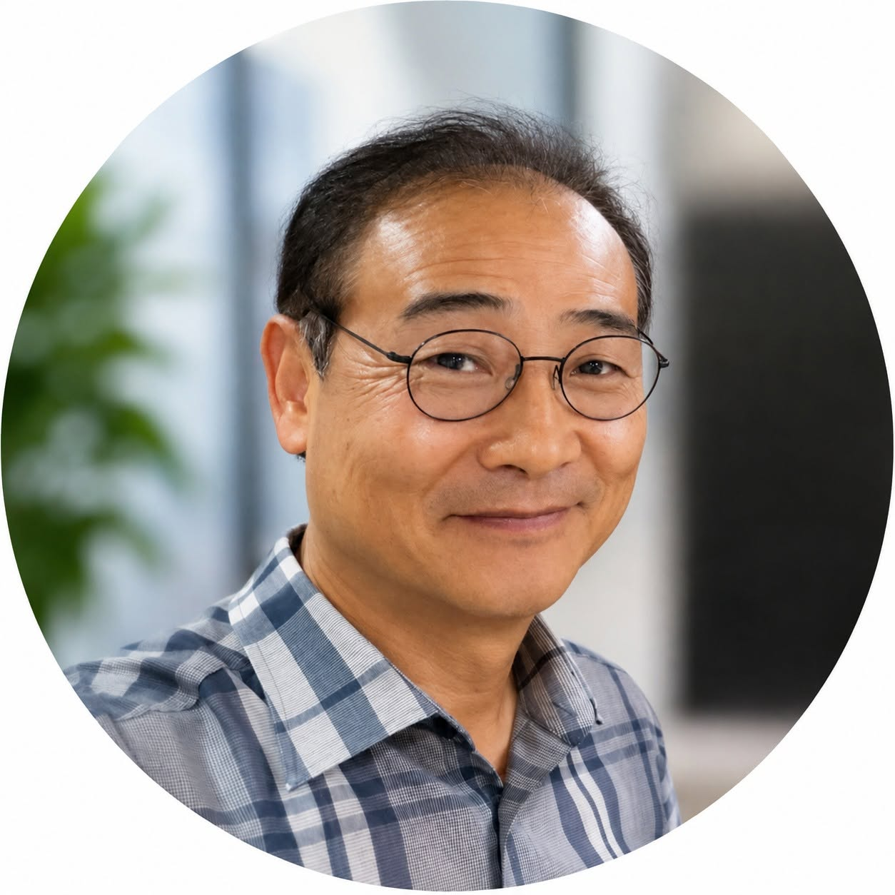

산업 현장의 경험
- 2013–2015
- 삼성전자 MSC 게임서비스팀
- 2012–2013
- Bdrive Inc. 대표이사
- 2010–2012
- CEWIT Korea 기술사업화 본부장
- 2008–2010
- NHN Japan 기술임원
- 2006–2008
- NHN 한게임 기술임원
- 2003–2005
- NCsoft 정보시스템 담당임원
- 1999–2003
- NCsoft USA 퍼블리싱사업 담당임원

ABOUT / 김규호
주식회사 커넥트웨어 대표
센서와 PCB, 펌웨어부터 Android 앱과 서비스 웹까지 개발합니다. 아이디어를 장치와 소프트웨어로 구현하고, 실제 사용 환경에 설치해 운영해 왔습니다.
NCsoft와 NHN에서 기술·사업을 이끌고, 삼성전자에서 게임서비스 업무를 맡았습니다. 이후 서강대학교와 이화여자대학교에서 산학협력중점교수로 활동했습니다.
가정의 난방 문제를 해결한 Valve God, 모션 데이터를 수집하는 디지털 미술펜, 부산 노선버스의 모바일 센서 시스템이 그 경험을 보여주는 프로젝트입니다.
CAREER & EDUCATION
경력·학력 참고: 위키백과 — 김규호 ↗
EXPERIENCE
HARDWARE · FIRMWARE · APP · WEB
태블릿 펜에 모션 센서를 붙여 데이터를 수집하는 시스템을 개발했습니다. 센서·PCB·펌웨어, Android 앱, 서비스 웹까지 함께 구현했습니다.
프로젝트 자세히 보기FIELD INSTALLATION · MONITORING
부산의 여러 노선버스에 실내·실외 센서 60세트를 설치하고, 1년여간 데이터를 모니터링했습니다. 실제 운행 환경에서 시스템을 설치하고 운영했습니다.
프로젝트 자세히 보기2015 / PROJECT PRESENTATION
지역난방 아파트의 방별 난방 편차를 줄이기 위해 온도 센서와 난방 밸브를 연결한 제어 시스템을 제작했습니다. 가정에서 온도 변화를 관찰하며 제어 방식을 조정했고, 2015년 제작·운영 경험을 발표했습니다.
발표자료 보기2017 / EXHIBITION
Valve God이 서울시립 북서울미술관의 《메이크 잇 Make it》전에 초대되었습니다. 생활의 문제를 스스로 해결하는 제작 사례로 소개되었습니다.
전시 기록 보기LET’S CONNECT
필요한 기능과 해결하고 싶은 문제에 대한 얘기 환영합니다
contact@connectware.kr